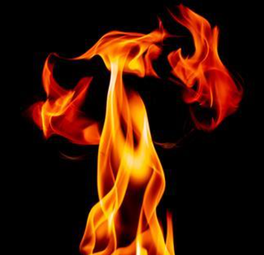

Domaine de physique
Thermodynamique classique

Thermodynamique classique : étude des processus thermiques et des systèmes en équilibre thermique.
Les lois de la thermodynamique (première, deuxième et troisième lois).
titre thermo:
sous titre thermo:
blablabla
un autre:
patati patata
et un autre:
patin, couffin